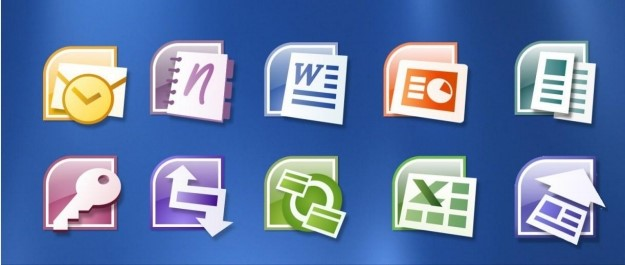

Unless stated otherwise, desktop applications are available for Windows and macOS.
Microsoft Word: a word processor included in Microsoft Office and some editions of the now-discontinued Microsoft Works. The first version of Word, released in the autumn of 1983, was for the MS-DOS operating system and introduced the Computer mouse to more users. Word 1.0 could be purchased with a bundled mouse, though none was required. Following the precedents of LisaWrite and MacWrite, Word for Macintosh attempted to add closer WYSIWYG features into its package. Word for Mac was released in 1985. Word for Mac was the first graphical version of Microsoft Word. Initially, it implemented the proprietary .doc format as its primary format. Word 2007, however, deprecated this format in favor of Office Open XML, which was later standardized by Ecma International as an open format. Support for Portable Document Format (PDF) and Open Document (ODF) was first introduced in Word for Windows with Service Pack 2 for Word 2007.
Microsoft Excel: a spreadsheet editor that originally competed with the dominant Lotus 1-2-3, and eventually outsold it. Microsoft released the first version of Excel for the Mac OS in 1985, and the first Windows version (numbered 2.05 to line up with the Mac) in November 1987.
Microsoft PowerPoint: a presentation program used to create slideshows composed of text, graphics, and other objects, which can be displayed on-screen and shown by the presenter or printed out on transparencies or slides.
Microsoft Access: a database management system for Windows that combines the relational Microsoft Jet Database Engine with a graphical user interface and software development tools. Microsoft Access stores data in its own format based on the Access Jet Database Engine. It can also import or link directly to data stored in other applications and databases.
Microsoft Outlook (not to be confused with Outlook Express, Outlook.com or Outlook on the web): a personal information manager that replaces Windows Messaging, Microsoft Mail, and Schedule+ starting in Office 97, it includes an e-mail client, calendar, task manager and address book. On the Mac OS, Microsoft offered several versions of Outlook in the late 1990s, but only for use with Microsoft Exchange Server. In Office 2001, it introduced an alternative application with a slightly different feature set called Microsoft Entourage. It reintroduced Outlook in Office 2011, replacing Entourage.
Microsoft OneNote: a note taking program that gathers handwritten or typed notes, drawings, screen clippings and audio commentaries. Notes can be shared with other OneNote users over the Internet or a network. OneNote was initially introduced as a standalone app that was not included in any of Microsoft Office 2003 editions. However, OneNote eventually became a core component of Microsoft Office; with the release of Microsoft Office 2013, OneNote was included in all Microsoft Office offerings. OneNote is also available as a web app on Office Online, a freemium (and later freeware) Windows desktop app, a mobile app for Windows Phone, iOS, Android, and Symbian, and a Metro-style app for Windows 8 or later.

Microsoft Publisher: a desktop publishing app for Windows mostly used for designing brochures, labels, calendars, greeting cards, business cards, newsletters, web site, and postcards.
Skype for Business: an integrated communications client for conferences and meetings in real time, it is the only Microsoft Office desktop app that is neither useful without a proper network infrastructure nor has the "Microsoft" prefix in its name.
Microsoft Project: a project management app for Windows to keep track of events and to create network charts and Gantt charts, not bundled in any Office suite.
Microsoft Teams: a platform that combines workplace chat, meetings, notes, and attachments. Microsoft announced that Teams would eventually replace Skype for Business.
Microsoft Visio: a diagram and flowcharting app for Windows not bundled in any Office suite.